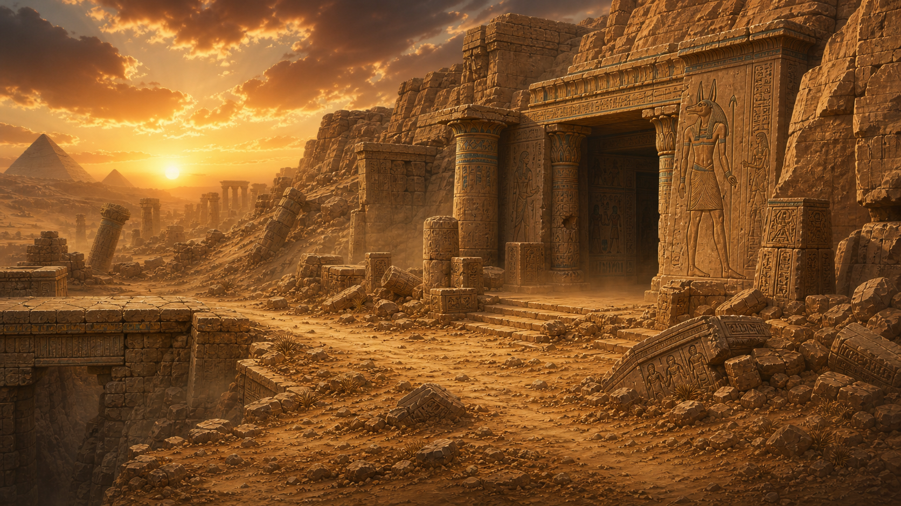
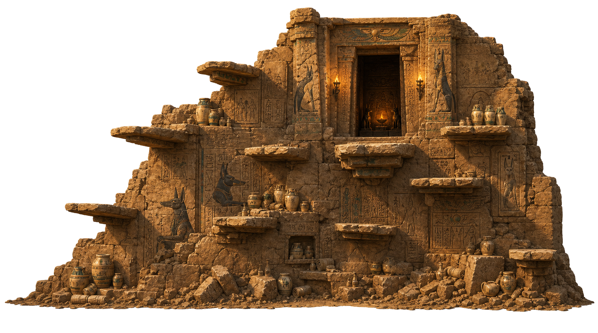

1. RAW PASTE - no treatment (the "cutout" look you're worried about)
2. IN-GAME TODAY - exact grade the live entrance prop uses: saturate(78%) sepia(8%) contrast(96%) brightness(86%), alpha 0.92
3. RECOMMENDED - warmer sunset grade + base contact shadow + sand lip burying the rubble + scene haze
What changes between 1 and 3: the structure's neutral midday lighting gets pulled toward the plate's orange sunset, contrast comes down to match the haze, the base rubble gets a soft contact shadow and a sand lip so it reads as sitting IN the ground, and a thin warm haze ties both layers together.
Values used in panel 3: saturate(82%) sepia(26%) hue-rotate(-4deg) contrast(92%) brightness(82%) - all tunable in the Shift+E editor.